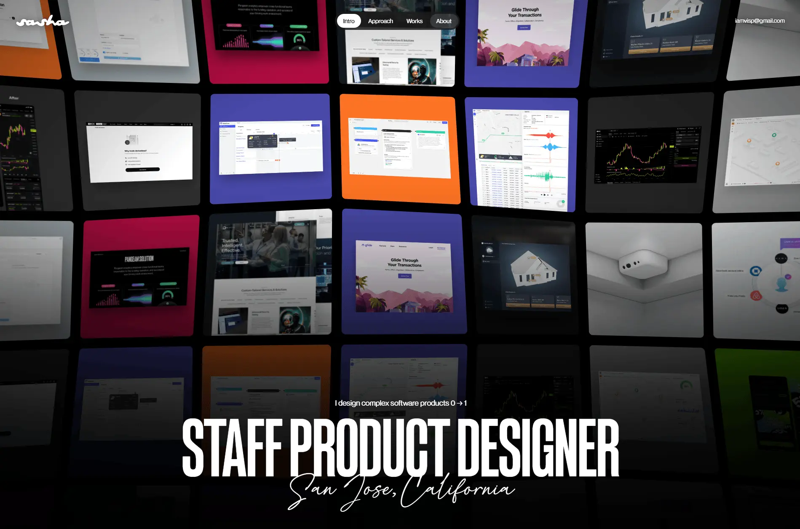

Sasha Martynchuk
- Личные сайты и портфолио
- Дизайнер
- Минимализм
- Монохром
- Редакционный
- Сайт жив

Что это
Портфолио Саши Мартынчука, штатного продуктового дизайнера из Сан-Хосе: 16 лет в SaaS и кейсы OKX, Pangeam, GlobalTrack, Lumus AI. Сайт собран как аккуратный светлый журнал — крупная типографика, цифры проектов и видео-фрагменты интерфейсов, которые включаются сами, когда попадают в кадр. Динамичный анимированный сайт-портфолио Саши Мартынчука — продуктового дизайнера из Сан-Хосе.
Что смотреть в первую очередь
Начать с переходов: клик по кейсу переворачивает страницу кубом, а на странице кейса hero-картинка складывается по сгибу. Дальше — видео-фрагменты интерфейсов, которые запускаются сами, когда попадают в кадр.
Чем интересен
- Скриншот — другая, более ранняя версия: тёмный первый экран с сеткой скриншотов и меню. В живой версии — светлая страница с аватаром, кнопками Send email, Copy email, Resume и вертикальным списком кейсов.
- До июня 2026 на домене стояла сборка конструктора Framer; текущая версия отдаётся статикой с обычного хостинга и собрана через сборщик Vite.
- Переходы между страницами — библиотека Barba.js с эффектом «куба»: контейнер помечен, а поверх — слой с кадровыми анимациями.
- Анимация на GSAP со SplitText и ScrollTrigger: заголовок разбивается на символы, элементы раскрываются по контуру, а при «уменьшении движения» всё сразу ставится в конечное состояние.
- Видео в кейсах — не фон, а «плёнка»: у каждого проекта три формата и отложенная загрузка; ролик включается, когда блок на треть в кадре, и встаёт на паузу, когда уходит.
- Страницы кейсов устроены как лонгрид: шапка с метриками, большое изображение со «сгибом», блок Key contributions со стат-карточками в 208 и 650 миллионов долларов и главы.
- Аналитика загружается лениво: GA4, Microsoft Clarity и Contentsquare подключаются после первого жеста или через 3,5 секунды — ради экономии примерно 370 килобайт.
Паспорт
- Домен
- sashamartynchuk.com
- Тип сайта
- Портфолио
- Категории
- Личные сайты и портфолио
- Подкатегории
- Дизайнер
- Для кого
- Дизайнерам, Продуктовым командам
- Стиль
- Минимализм, Монохром, Редакционный
- Язык
- Английский
- Страна
- США, Сан-Хосе
- Автор
- Sasha Martynchuk — продуктовый дизайнер
- Год
- 2026
- Добавлен в коллекцию
- 30.10.2026
Палитра
-
#060606— 43% кадра -
#26272D— 14% кадра -
#F7F7F7— 9% кадра -
#7F8080— 6% кадра -
#5D5E5F— 5% кадра
- Режим
- Тёмная
- Цвет фона
- Нейтральный
Технологии
- GSAP 3.15.0
- GSAP SplitText 3.15.0
- ScrollTrigger
- Lenis
- Barba.js
- Vite
- Hostinger
- Шрифты Neue Montreal и Arges
- HTML5 video (AV1/HEVC/H.264)